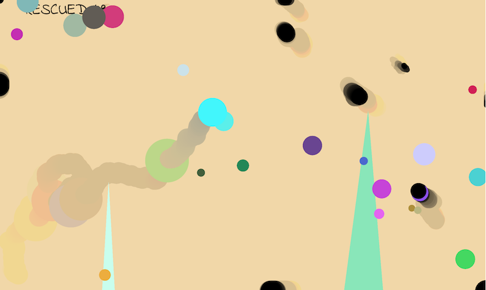
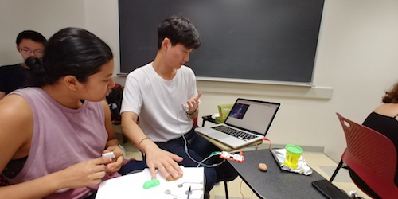
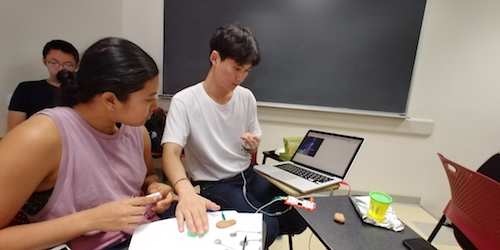

Rescue
Rescue is a colorful game that relaxes you from daily stress. It plays a beautiful stream of songs along with satisfying sound effects. It was originated from an idea to create a mind relaxing game that I can play without stress, but also something I wouldn't want quit so easily. As the "Ghost" rescues other souls, it absorbs their colors. Rescuing dark souls will eventually turn the Ghost to pitch black. Brighter ones, make it brighter.
Physical Controller


Makey Makey is an electronic invention kit that can basically connect any conductive material to the keyboard. Objects such as play-doh, bananas, even pencial traces and send electric signals to the board and to the machine. Leveraging Makey Makey, I can hook up play-doh to the game and use them as physical controllers.